资源
正文
Git / GitHub 基础介绍
先导课
什么是 Git / Github
访问 GitHub 加速的方法
- Watt Toolkit
- 瓦特工具箱(Steam++官网) - Watt Toolkit：主要是加速 Steam 用
- dev-sidecar：Releases · docmirror/dev-sidecar
- github、Stack Overflow、npm 加速
GitHub 网站基础介绍
- maboloshi/github-chinese: GitHub 汉化插件，GitHub 中文化界面。 (GitHub Translation To Chinese)：油猴插件，汉化 github
- Immersive Translate - Translate Web & PDF - Microsoft Edge Addons：翻译网站的插件，会把翻译的文本附在原文旁边
创建账户
双重身份验证
用户 - Settings - Password and authentication：
{kind=link}
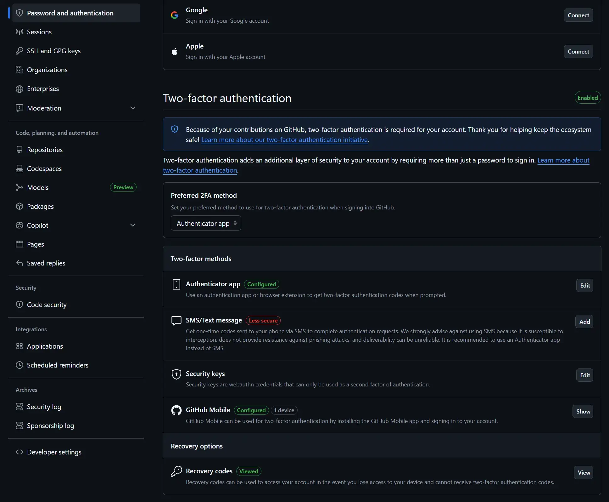
现在贡献过代码的用户都必须开启 2FA 了。
Github 目前支持的 2FA：
-
TOTP（一次性验证码 App）
- Google Authenticator
- Microsoft Authenticator
- Authy
- 1Password / Bitwarden 自带 OTP
-
安全密钥（FIDO2 / U2F）硬件设备登录
- YubiKey
- Feitian Key
- Windows Hello、Touch ID 等内置生物认证（部分设备支持）
-
SMS 短信（不能用 +86……）
仓库功能
README / issue / release / PR
在 GitHub 仓库页面右上角的 Watch 按钮，点击可以选择三个级别：
| Watch 类型 | 说明 | 通知内容 |
|---|---|---|
| Not watching（不关注） | 默认状态，不主动接收通知 | 只在你被 @ 提及时收到通知 |
| Releases only（只关注发布） | 只在新 release 发布时通知 | 新 release 时收到通知，commit 不通知 |
| Watching（关注所有活动） | 关注全部动态 | Issue、PR、Discussions，以及部分事件通知，但 commit 不一定都通知 |
GitHub 快捷键
在 任意 GitHub 页面按 ?，就会显示完整可用快捷键列表。
会一个 . 调出仓库对应的 VSCode……
发现工具 寻找灵感
- Explore GitHub：探索与发现 Github 新闻/热榜
- Search：搜索相关项目
{kind=link}
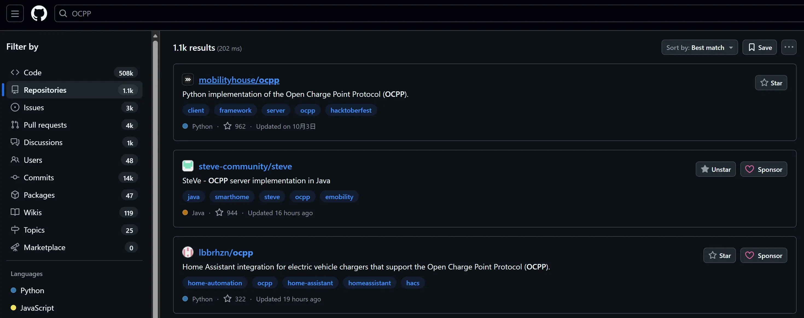
GitHub 高级搜索功能
- GitHub · Where software is built：高级搜索，根据
Advanced options得到Advanced search搜索语句
如何下载运行 GitHub 的开源项目
- 直接 Download ZIP
git clone XXX- 找到
Release下载编译后的软件- GitHub Release 通常有两个主要部分：
- Release 名称（Release Name）
- 可以自由命名，例如：
v1.0.0、Initial release、Beta 2 - 命名没有强制规范，但一般遵循 语义化版本控制（SemVer）
- SemVer 格式：
MAJOR.MINOR.PATCH- MAJOR：大版本，破坏性改动
- MINOR：小版本，新增功能，不破坏兼容
- PATCH：修复 bug，不影响功能
- SemVer 格式：
- 可以自由命名，例如：
- 附加的二进制文件 / 源码压缩包（Assets）
- 文件名通常遵循
[项目名]-[版本号]-[平台/架构].[后缀]的形式 - 常见例子：
MyApp-1.2.3-windows-x64.zipMyApp-1.2.3-linux-arm.tar.gzMyApp-1.2.3-macos.dmg
- 文件名通常遵循
- Release 名称（Release Name）
- GitHub Release 通常有两个主要部分：
{kind=link}
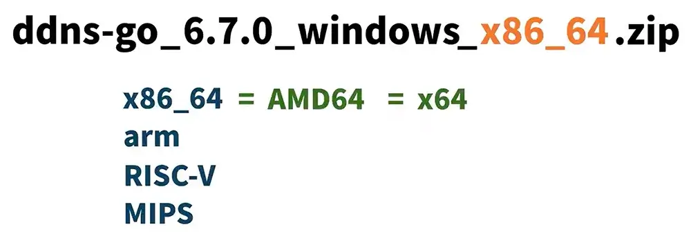
| 项目 | x86_64（AMD64/x64） | ARM（AArch64） | RISC-V | MIPS |
|---|---|---|---|---|
| 架构类型 | CISC（复杂指令集） | RISC（精简指令集） | RISC（开源指令集） | RISC（经典精简架构） |
| 主要厂商 | Intel、AMD | ARM Ltd.（授权模式）+ 高通/苹果/华为/联发科 | 多家厂商，可自由实现 | 联发科、龙芯（早期）、博通等 |
| 是否开源 | 否 | 否（需要授权） | 是（完全开源） | 否 |
| 性能特点 | 单核性能强、桌面生态最强 | 高能效比、移动设备性能强 | 可裁剪、灵活、适合科研与定制芯片 | 架构简单、成熟但生态老化 |
| 功耗表现 | 高 | 非常低 | 中等（视实现） | 低 |
| 主要运行平台 | Windows、Linux、服务器、桌面电脑 | 手机（Android/iOS）、平板、嵌入式、Apple M 系列电脑 | 嵌入式、科研、 Linux、部分开发板 | 嵌入式老平台、路由器、早期 Linux 设备 |
| 生态与软件支持 | 最强（应用最多、兼容最好） | 强（Android/iOS 主导） | 快速增长（得益于开源） | 减退（被 ARM/RISC-V 取代） |
| 芯片成本 | 较高 | 较低，量大 | 低（无授权费） | 较低 |
| 是否支持 SIMD | SSE/AVX 系列很强 | NEON | RVV（RISC-V Vector） | MSA（较弱） |
| 典型设备 | PC、笔记本、服务器、游戏机 | 手机、平板、物联网、Apple Silicon Mac | ESP32-C3/C6、开发板、AI加速器 | 早期路由器、交换机 |
| 未来趋势 | 稳定但增长缓慢 | 快速增长（尤其在 PC 端） | 未来潜力巨大 | 趋势下降，逐步淡出主流 |
- 看看
About有没有官网地址/演示页面 - 看看
README.md有没有Docker命令直接启动 - 看看
README.md有没有一键部署 - 看看
README.md自行下载编译
Git 与 GitHub 的历史起源
GitHub 基础操作（网站）
装修 GitHub 个人主页
简装修 / 精装修
简装修：在自己主页随意修改
{kind=link}
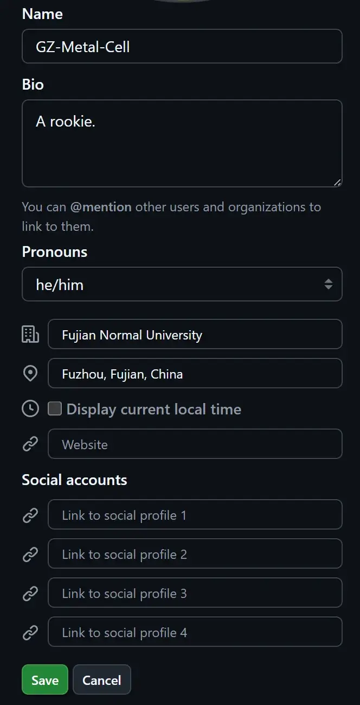
精装修：创建一个名称与自己用户名一致的仓库，编辑其中的 README.md。
{kind=link}
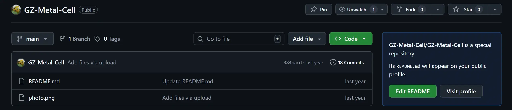
README.md 中添加仓库状态：
# 仓库状态统计

# 主页访问量统计
但是现在已经失效了……应该总有等价替代。
可以学习别人的主页的 README.md 来装修自己的主页。
Markdown 语法
创建自己的第一个仓库
选择开源许可证
{kind=link}
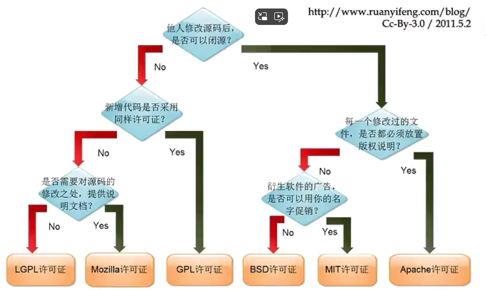
| 许可证 | 商业使用 | 是否要求开源衍生品（Copyleft） | 是否允许闭源修改 | 特点 / 适用场景 |
|---|---|---|---|---|
| MIT License | ✔️ | ❌ | ✔️ | 最宽松许可之一；只需保留版权声明；广泛用于前端、JS、Python 项目 |
| Apache 2.0 | ✔️ | ❌ | ✔️ | 类似 MIT，但额外提供专利授权保护；适合企业项目 |
| BSD 2-Clause | ✔️ | ❌ | ✔️ | 宽松许可，条款比 MIT 更少 |
| BSD 3-Clause | ✔️ | ❌ | ✔️ | 在 BSD2 基础上禁止用作者名义做宣传 |
| GPLv3 | ✔️ | ✔️ 强制 | ❌（衍生必须开源） | 强 Copyleft；适合希望所有改动必须继续开源的项目 |
| LGPLv3 | ✔️ | ⚠️弱 Copyleft（库链接没问题） | ✔️（仅链接可闭源） | 常用于库（如 C/C++/Java 库），链接可闭源，修改库本身需开源 |
| AGPLv3 | ✔️ | ✔️ 更强制 | ❌ | 最严格的 Copyleft；即使是 SaaS（远程部署）也必须开源 |
| MPL 2.0 | ✔️ | ⚠️ 文件级别开源 | ✔️ | 只要求修改过的文件开源，不要求整个项目；多用于浏览器扩展等 |
| Unlicense | ✔️ | ❌ | ✔️ | 完全进入公共领域（Public Domain），无任何限制 |
| CC0（Creative Commons Zero） | ✔️ | ❌ | ✔️ | 与 Unlicense 类似，常用于文档、素材，而非代码 |
| EPL（Eclipse Public License） | ✔️ | ⚠️弱 Copyleft | ✔️ | Java 生态常用；修改 EPL 文件需开源 |
| Boost License | ✔️ | ❌ | ✔️ | C++ 社区常用，宽松且专为库设计 |
| Zlib License | ✔️ | ❌ | ✔️ | 比 MIT 还简单，C/C++ 项目常见 |
commit 概念
每次 commit 都是仓库的一个快照，都有一个专有的 SHA 值，<> 按钮可以查看当前 commit 时候仓库的状态。
{kind=link}
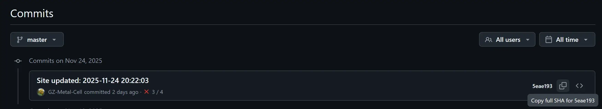
可以创建一个 gist 以存储一个单独的代码文件/代码片段。
注意
GitHub 的 Gist 是 GitHub 提供的一个轻量级代码片段（snippet）分享服务，它既可以用来保存小段代码、配置、笔记，也可以作为一个迷你版本的 Git 仓库。
{kind=link}
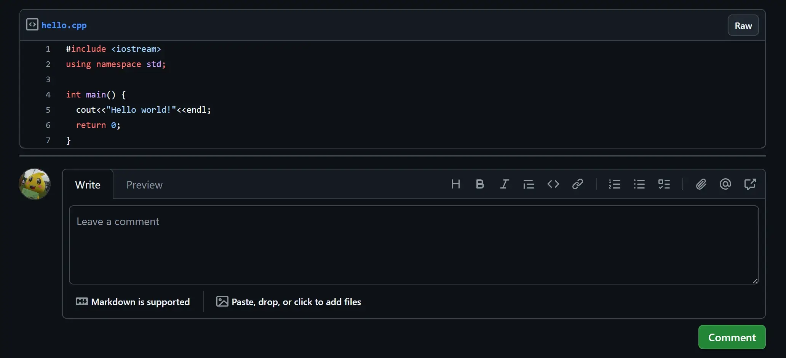
还可以导出成 HTML 语句便于分享：
{kind=link}
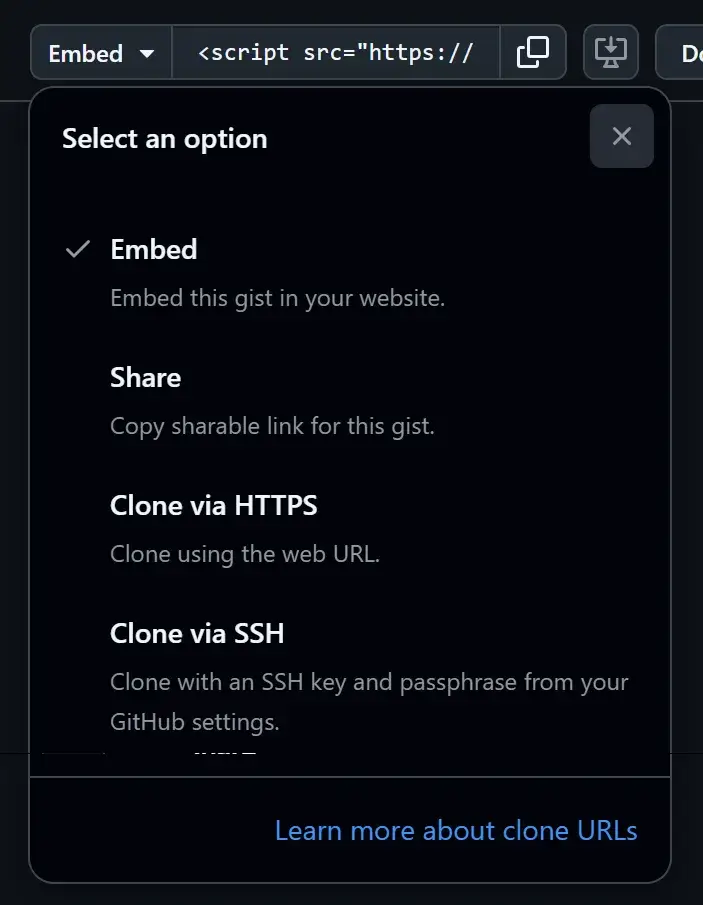
Git 分支（网站）
创建 / 修改 Branch
git checkout -b feature
git commit
git commit
git switch main
git checkout -b bugfix
git commit
git switch main
git merge bugfix --no-ff
git switch feature
git commit
git commit
git switch main
git merge feature{kind=link}
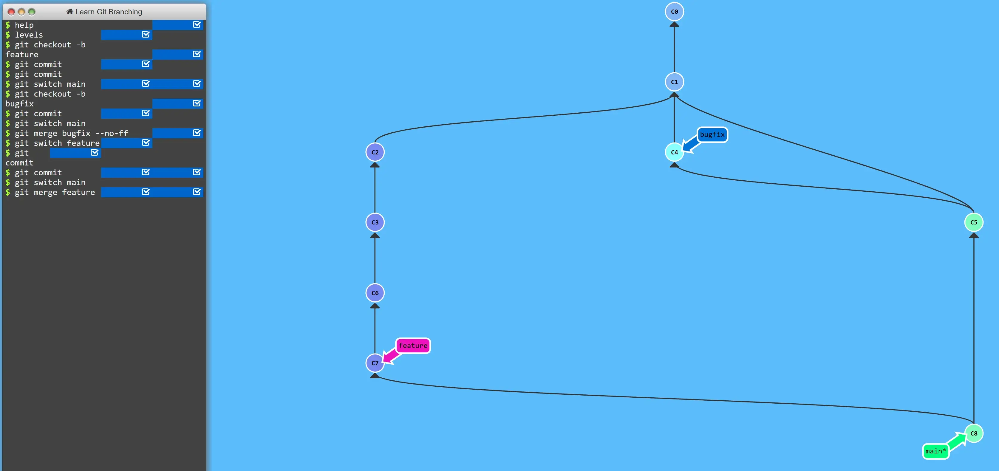
-
开发到 C1 时发布到生产环境中
-
开启 feature 分支添加新功能。
-
feature 分支开发到 C3 时，报告 C1 出现 bug，需要立即修复
-
开启 bugfix 分支修复 bug（C4）
-
bug 修复，合并分支 C5，分支回到 main
-
feature 分支开发到 C7 时，开发完成，合并分支给 main（C8）
Pull Request
{kind=link}
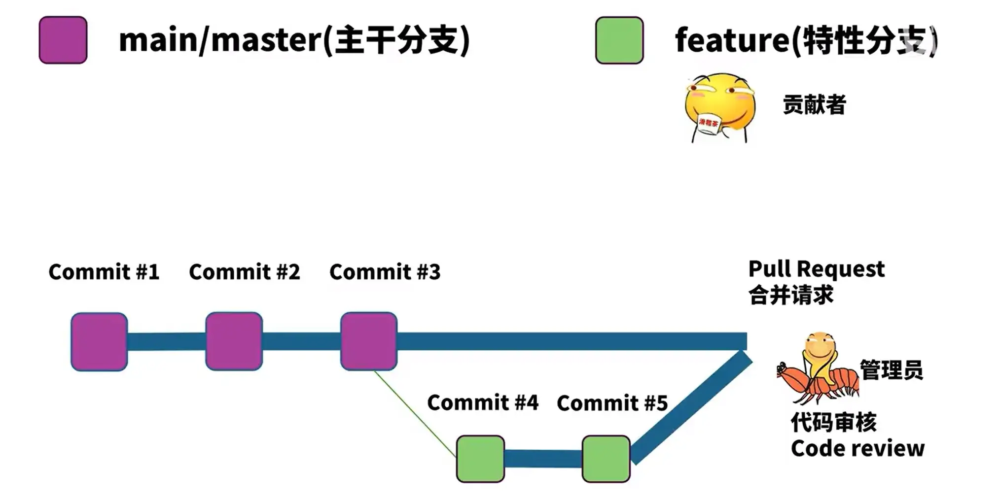
贡献者开新的分支修改代码后，可以向管理员发起申请合并到主分支（Pull Request），管理员代码审核（Code review）后即可合并分支。
GitHub 是如何工作的
仓库其他功能
github wiki
注意
GitHub Wiki 是 GitHub 为每个仓库提供的文档系统，让你能够在项目中内置一套类似独立网站的文档。它适合写使用说明、设计文档、技术规范、开发计划等，比 README 更系统化。
如：Home · facebook/react-native Wiki
github insight
{kind=link}
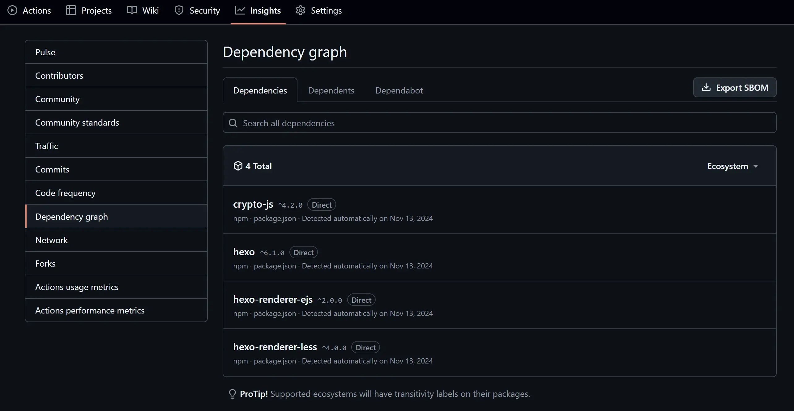
注意
GitHub Insights = 针对仓库的可视化数据统计工具。
能帮助你分析：
- 谁在贡献？
- 贡献速度如何？
- 代码变化趋势？
- Issue / PR 的处理效率？
- 仓库是否活跃？
对于开源项目或多人协作项目特别有用。
社区规则
{kind=link}
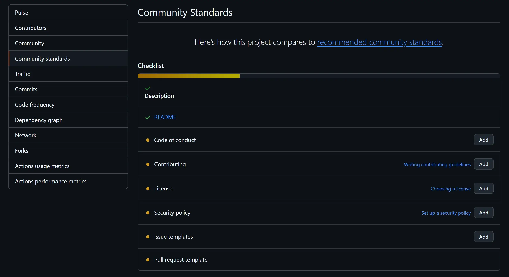
| 项目 | 用途 |
|---|---|
| README | 项目介绍、安装使用说明 |
| LICENSE | 开源许可声明，明确代码使用权 |
| CODE OF CONDUCT | 行为准则，规范贡献者行为 |
| CONTRIBUTING | 如何贡献代码、提 Issue、提 PR |
| ISSUE_TEMPLATE | Issue 模板，规范用户反馈 |
| PULL_REQUEST_TEMPLATE | PR 模板，规范提交格式 |
| SECURITY.md | 安全漏洞报告方式 |
| SUPPORT.md | 如何获得帮助、常见问题 FAQ |
注意
作用：
- 提高开源项目专业度
- 让贡献者知道应如何参与
- 降低沟通成本
- GitHub 会标注完成度，用绿色勾选表示已完善
项目统计
{kind=link}
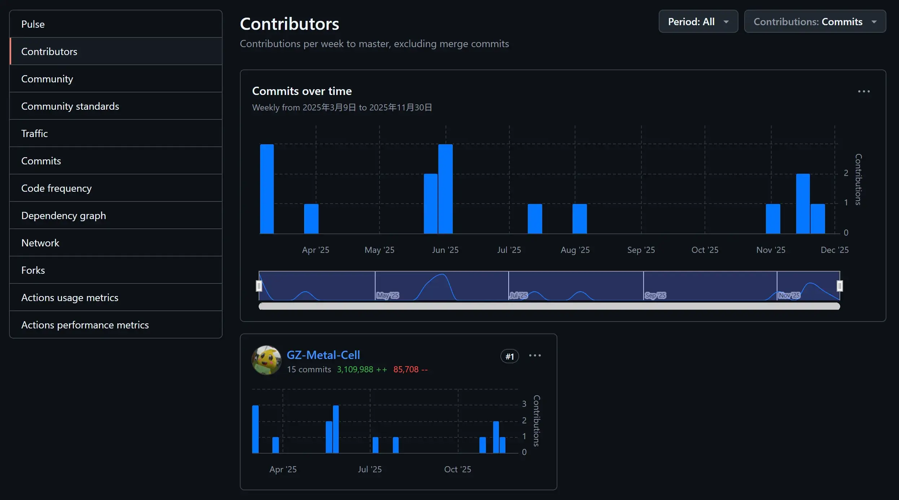
注意
“项目统计”不是一个独立标签，而是旗下多项 数据统计功能（一般在 Insights 中）。
通常包含：
- 总贡献者（Contributors）
- Commit 活动（Commit Activity）
- Code Frequency（代码改动频率）
- Punch Card（时段热力图）
安全机器人
{kind=link}
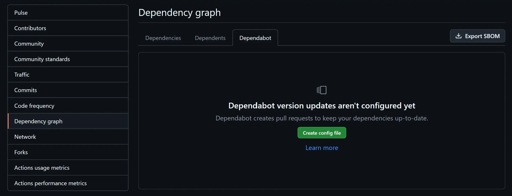
可以查看官方文档学习如何配合 Dependabot。
注意
Dependabot Alerts（依赖安全漏洞提醒）
- GitHub 会自动扫描仓库的依赖（如 npm、pip、cargo 等），如果某个依赖被发现有安全漏洞，会发出：
- 安全警告（Security Alert）
- 显示漏洞等级：Low / Moderate / High / Critical
- 给出修复建议（升级到指定版本）
Dependabot Security Updates（自动修复机器人）
-
安全机器人会：
-
自动创建 Pull Request
-
将存在漏洞的依赖升级到安全版本
-
PR 内含完整变更说明与安全报告链接
-
-
你可以选择：
-
自动合并更新
-
手动检查后再合并
-
Code Scanning（代码安全扫描）
-
GitHub 使用 CodeQL 做静态分析：
-
扫描你代码中可能的漏洞
-
如 SQL 注入、XSS、未检查的外部输入等
-
在 PR 中直接提示问题位置
-
Secret Scanning（密钥泄漏检查）
-
如果代码里误提交了：
-
API Key
-
Token
-
Password
-
AWS/Google Cloud 凭证等
-
GitHub 会立即警告你。
注意
总结：
| 文件 / 文件夹 | 位置 | 作用 / 触发功能 |
|---|---|---|
| README.md | 根目录 | 仓库主页说明；Community Standards 必备项 |
| LICENSE / LICENSE.md | 根目录 | 触发 GitHub 自动识别开源协议；Community Standards 必备项 |
| CONTRIBUTING.md | 根目录 | 触发 Contribution 指南入口；Community Standards 推荐项 |
| CODE_OF_CONDUCT.md | 根目录 | 触发 CoC（行为准则）入口；Community Standards 推荐项 |
| SECURITY.md | 根目录 | 定义漏洞报告流程；触发 Security 页面展示；Community Standards 推荐项 |
| SUPPORT.md | 根目录 | 添加“Support”链接；让用户知道如何寻求帮助 |
| README_*.md（多语言） | 根目录 | GitHub 自动识别国际化 README（如 README.zh.md） |
| .github/ISSUE_TEMPLATE/ | .github/ISSUE_TEMPLATE/ | 触发 Issue 模板选择器（多模板） |
| ISSUE_TEMPLATE.md | 根目录或 .github/ | 单一 Issue 模板 |
| PULL_REQUEST_TEMPLATE.md | 根目录或 .github/ | 启用 PR 模板 |
| .github/workflows/ | .github/workflows/ | 触发 GitHub Actions 工作流（CI/CD） |
| .github/dependabot.yml | .github/ | 启用 Dependabot 自动更新依赖 |
| CODEOWNERS | .github/ 或 docs/ 或根目录 | 触发自动 Review 请求；保护分支规则生效 |
| FUNDING.yml | .github/ | 启用“Sponsor”按钮（GitHub Sponsors / Patreon 等） |
| CITATION.cff | 根目录 | 触发“Cite this repository”引用信息 |
| .gitignore | 根目录 | Git 忽略规则（不属于特殊功能，但重要） |
| .gitattributes | 根目录 | 控制 Git 文件行为（换行、LFS、语言统计等） |
| .editorconfig | 根目录 | 触发 IDE 格式化规范（编辑器支持） |
| docs/ | 根目录 | GitHub Pages 可从 docs/ 构建（如果启用） |
| mkdocs.yml / docusaurus.config.js 等文档配置 | 根目录 | 用于自动识别文档框架（不属于 GitHub 功能本身） |
| Gemfile + _config.yml（Jekyll） | 根目录 | GitHub Pages（Jekyll 构建）自动支持 |
| /wiki（独立仓库） | repo.wiki.git | 触发 GitHub Wiki 文档系统 |
github project
GitHub 项目管理
{kind=link}
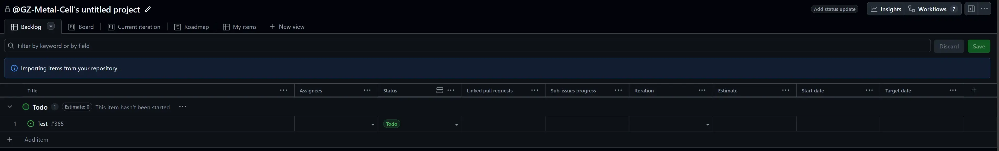
感觉像 TAPD……
注意
GitHub 项目管理是一套 GitHub 内置的任务管理 + 项目看板系统，用于协作开发、需求管理、迭代规划。
它包括：
- Projects（项目/看板）
- Issues（问题/需求）
- Pull Requests（代码合并流程）
- Milestones（里程碑）
- Labels（标签分类）
- Assignees（任务负责人）
- Discussions（讨论区）
- Actions（自动化 CI）
这些组合起来，就形成 GitHub 的项目管理体系。
github discussions
注意
| 项目 | 适合用 Issue | 适合用 Discussions |
|---|---|---|
| 目的 | 报 Bug、跟踪任务 | 提问、讨论、建议、交流 |
| 生命周期 | 明确的「开始-解决-关闭」 | 可以长期开放 |
| 官方性 | 开发流程的一部分 | 社区互动区 |
| 结构 | 有状态、可分配、可链接 PR | 帖子 flow、投票、回答、置顶等 |
类似于围绕项目的论坛。
GitHub Desktop
Github Desktop 安装配置
就是个类似于 Sourcetree 的东西。
.git 文件夹是什么
{kind=link}
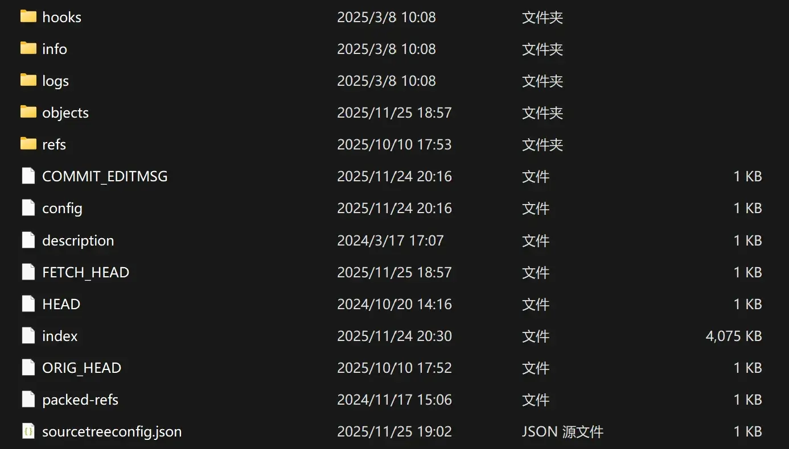
注意
典型的 .git 目录包含如下内容（实际可能因版本或配置略有变化）：
.git/
├── HEAD
├── config
├── description
├── index
├── hooks/
├── info/
├── objects/
├── refs/
│ ├── heads/
│ ├── tags/
│ └── remotes/
├── logs/
│ ├── HEAD
│ └── refs/
├── packed-refs
├── COMMIT_EDITMSG
└── ...（其他临时或可选文件）
objects/（Git 数据库核心）
objects/
├── 1a/
│ └── 2bcdef...
├── 6f/
│ └── 98abcd...
├── pack/
│ ├── pack-xxx.pack
│ ├── pack-xxx.idx
| 类型 | 作用 |
|---|---|
| blob | 存储文件内容 |
| tree | 存储目录结构 |
| commit | 存储提交指针、作者、时间、父节点 |
| tag | 轻量/附注标签对象 |
refs/（引用）
refs/
├── heads/ ← 本地分支
├── tags/ ← 标签
└── remotes/ ← 远程分支
保存分支、tag、远程分支等的指针。
logs/（引用操作历史）
logs/
├── HEAD
└── refs/
├── heads/
├── remotes/
使用 git reflog 查看 HEAD、分支切换历史时，数据来自此目录。
hooks/（钩子，一般需要用户自定义）
预置多种 hook 脚本（shell），但默认都被 .sample 禁用。
pre-commit.sample
pre-push.sample
post-merge.sample
prepare-commit-msg.sample
...
可以用于：
- 自动格式化代码（pre-commit）
- 代码检查
- 阻止带敏感信息的 push
- 自动执行脚本
info/（补充信息）
包含：
.git/info/exclude：只对当前仓库有效的忽略文件（类似.gitignore）- 额外元数据（少用）
用于本地忽略不想提交的内容。
Git 的三棵树在 .git 中的对应关系
| 树 | Git 名称 | 物理位置 | 说明 |
|---|---|---|---|
| 工作树 | Working Directory | 仓库根目录 | 你正在编辑的文件 |
| 暂存区 | Index / Stage | .git/index | git add 后的状态 |
| 提交树 | Repository | .git/objects | 历史记录与内容数据库 |
Git 四个分区的概念
{kind=link}
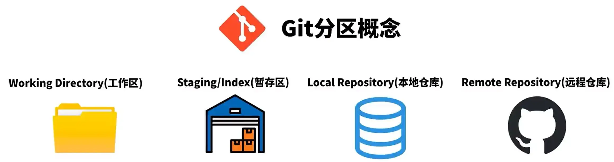
注意
| 分区 | 相关命令 | 作用 |
|---|---|---|
| Workspace | checkout, restore, 修改文件 | 文件编辑区 |
| Index（暂存区） | add, rm --cached | 准备提交内容 |
| Local Repository | commit, revert, reset | Git 历史数据库 |
| Remote Repository | push, fetch, pull | 远端协作 |
Github Desktop 隐藏了暂存区这个概念，但是 sourcetree 没有。
GitHub Desktop 实践 git 基础流程
Desktop 进阶操作
stash
注意
临时保存未完成的工作
- 当你正在修改文件，还没准备好 commit，但必须切换分支或 pull 最新代码时，
git stash可以把当前修改收起来。
保持工作区干净
- 切换分支或执行其他操作时，不会影响当前未完成的工作。
可以多次贮藏
- 每次
stash都会生成一个条目，可以通过stash list查看。
注意
如果你有开发了一半的代码，现在出现一个临时紧急工作，需要切换分支处理。
对于还未提交的改动我们可以做如下处理：
| 操作方法 | git 命令 | 效果 |
|---|---|---|
| commit | git add . git commit -m "commit message" | 工作区文件提交本地分支 |
| stash | git stash | 将改动存储起来 |
| discard | git reset --hard | 抛弃工作区与暂存区的更改 |
| switch | git switch <branch_name> | 直接切换分支，你的本地改动会带到新分支上 |
git 后悔药
reset
撤回提交。
| git 命令 | 效果 |
|---|---|
git reset --soft <commit> | 撤回提交，撤回的更改保留在暂存区和工作目录 |
git reset --mixed <commit> | 撤回提交与暂存区，撤回的更改保留在工作目录 |
git reset --hard <commit> | 撤回提交与暂存区 + 工作目录，不保留任何更改 |
git reset --keep <commit> | 撤回提交与暂存区 + 工作目录，未提交的改动保留在工作目录 |
-
soft = 只撤 commit
-
mixed = 撤 commit＋撤 add
-
hard = 撤 commit＋撤 add＋撤修改（危险）
-
mixed 总是保留工作区的修改；keep 只有在不产生冲突时才保留，否则拒绝 reset。
discard
只撤销文件改动，不改 commit 历史。
revert
生成一个反向的操作抵消上次修改的结果。
amend
修改最后一次提交。
注意
| Git操作 | Git命令 | 使用场景 | 注意事项 |
|---|---|---|---|
| discard | git restore <文件名>（单个文件）git reset --hard（所有文件） | 工作区的修改还未 commit | 舍弃掉工作区修改的文件 |
| reset | git reset <commit ID> | 还原到某个 commit 的状态，舍弃之后的 commit | 如果 reset 已经推送到远端 commit，会造成强制推送，集成分支禁止强推 |
| revert | git revert <commit ID> | 使用一个新的提交抵消某次 commit 的修改 | - |
| amend | git commit --amend | 只能修改最新的一次 commit | 如果 amend 已经推送远端 commit，会造成强制推送，集成分支禁止强推 |
tag
{kind=link}
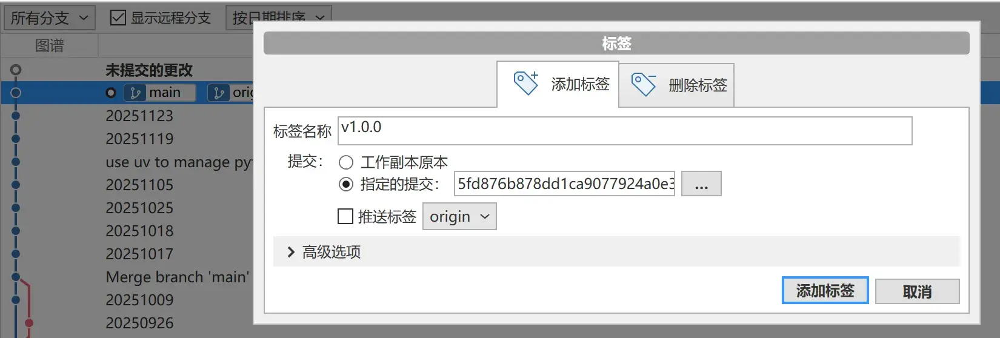
将某个推送标记为重要的标签。
分支合并
{kind=link}
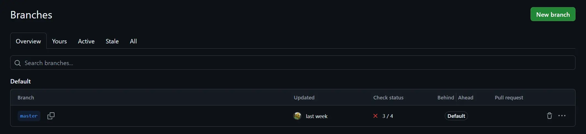
merge
保留完整的分支历史，创建一个新的合并提交。适合需要保留完整开发历史的场景。
rebase
将分支的提交移到目标分支的最新提交之后，创建线性历史。使提交历史更清晰，但会改写历史。
git pull --rebase 可以保持提交记录的干净（先拉取提交，再把自己的修改放在当前提交之后）。
squash merge
将分支上的所有提交压缩成一个提交后合并到主分支。适合清理琐碎的提交历史。
cherry pick
选择性地将某个提交应用到当前分支。适合只需要特定提交的场景。
VSCode 基础使用
解决合并冲突
多与小组成员沟通，达成一致后解决冲突后再提交。
Github 做开源贡献的基本流程
IDE 里面使用 Git
IDEA 里面使用 Git
IDEA 里面使用 Git 进阶
Git 命令行操作
git helpusage: git [-v | --version] [-h | --help] [-C <path>] [-c <name>=<value>]
[--exec-path[=<path>]] [--html-path] [--man-path] [--info-path]
[-p | --paginate | -P | --no-pager] [--no-replace-objects] [--no-lazy-fetch]
[--no-optional-locks] [--no-advice] [--bare] [--git-dir=<path>]
[--work-tree=<path>] [--namespace=<name>] [--config-env=<name>=<envvar>]
<command> [<args>]
These are common Git commands used in various situations:
start a working area (see also: git help tutorial)
clone Clone a repository into a new directory
init Create an empty Git repository or reinitialize an existing one
work on the current change (see also: git help everyday)
add Add file contents to the index
mv Move or rename a file, a directory, or a symlink
restore Restore working tree files
rm Remove files from the working tree and from the index
examine the history and state (see also: git help revisions)
bisect Use binary search to find the commit that introduced a bug
diff Show changes between commits, commit and working tree, etc
grep Print lines matching a pattern
log Show commit logs
show Show various types of objects
status Show the working tree status
grow, mark and tweak your common history
backfill Download missing objects in a partial clone
branch List, create, or delete branches
commit Record changes to the repository
merge Join two or more development histories together
rebase Reapply commits on top of another base tip
reset Reset current HEAD to the specified state
switch Switch branches
tag Create, list, delete or verify a tag object signed with GPG
collaborate (see also: git help workflows)
fetch Download objects and refs from another repository
pull Fetch from and integrate with another repository or a local branch
push Update remote refs along with associated objects
'git help -a' and 'git help -g' list available subcommands and some
concept guides. See 'git help <command>' or 'git help <concept>'
to read about a specific subcommand or concept.
See 'git help git' for an overview of the system.
注意
| 命令 | 基础说明 | 典型示例 | 高级参数示例（真实常用） |
|---|---|---|---|
clone | 克隆仓库 | git clone https://github.com/user/repo.git | git clone --depth=1 https://github.com/user/repo.git（浅克隆，加快速度） |
init | 初始化仓库 | git init | git init --bare（创建裸仓库） |
add | 添加到暂存区 | git add . | git add -p（交互式添加部分修改） |
mv | 移动/重命名文件 | git mv old new | — |
restore | 恢复工作区文件 | git restore file | git restore --staged file（撤销 add） |
rm | 删除文件 | git rm file | git rm -r --cached folder/（仅从暂存区删除） |
bisect | 二分查找问题提交 | git bisect start | git bisect run ./test.sh（自动化查 bug） |
diff | 查看差异 | git diff HEAD | git diff --cached（查看已暂存的 diff） |
grep | 搜索内容 | git grep "TODO" | git grep -n --ignore-case "error" |
log | 查看提交历史 | git log --oneline | git log --since="2 weeks ago" --author="Alice" --grep fix --stat |
show | 显示对象内容 | git show abc1234 | git show HEAD~3:file.txt（查看历史文件内容） |
status | 查看状态 | git status | git status --ignored（显示被忽略的文件） |
backfill | 补齐缺失对象 | git backfill origin | —（不常用，无主流高级示例） |
branch | 分支管理 | git branch -a | git branch -m old new（重命名分支） |
commit | 提交更改 | git commit -m "msg" | git commit --amend --no-edit（修改上一提交） |
merge | 合并分支 | git merge feature | git merge --squash feature（把多个提交压成一个） |
rebase | 变基 | git rebase main | git rebase -i HEAD~5（交互式编辑多个提交） |
reset | 重置 HEAD | git reset --hard HEAD~1 | git reset --soft HEAD~1（保留工作区+暂存区） |
switch | 切换分支 | git switch dev | git switch -c new-feature（创建并切换） |
tag | 标签操作 | git tag v1.0 | git tag -a v1.0 -m "Release"（带注释的标签） |
fetch | 拉取但不合并 | git fetch origin | git fetch --prune（删除远程已不存在的分支） |
pull | 拉取并合并 | git pull | git pull --rebase（先 rebase 再更新） |
push | 推送代码 | git push origin main | git push --force-with-lease（安全强推） |
Git LFS 大文件系统
git 不太适合存放大型文件，如果上传单个超过 100 MB 的大文件会被阻止，除非开启 Git LFS。
{kind=link}
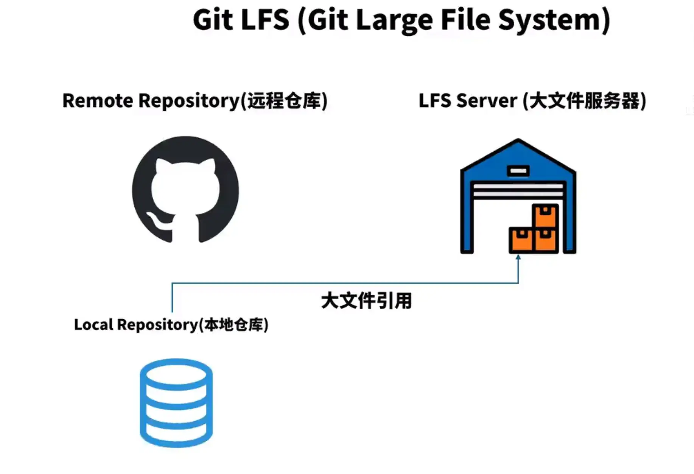
注意
适合以下场景：
- 游戏/设计行业：大量图片、贴图、音频、模型文件
- 视频项目：编辑素材动辄几百 MB
- 机器学习：模型权重（.h5, .pt, .onnx）
- 前端/多媒体项目：大体积静态资源
凡是单文件 > 50MB 的情况，都应该考虑用 LFS。
GitHub 普通文件超过 100MB 就无法 push，也会强制你使用 LFS。
开启并追踪某个仓库中的所有 .mp4 文件：
git lfs install
git lfs track "*.mp4"这个服务并不是免费的，能不用就不用。
{kind=link}
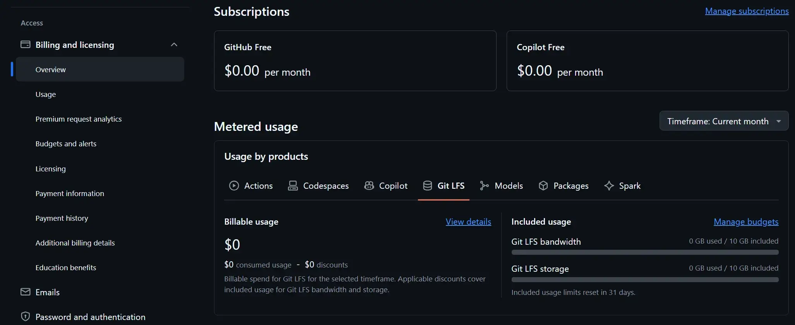
Github Action
Github Action 基础概念
注意
GitHub Actions 是 GitHub 官方提供的自动化 CI/CD 平台。
只要你的仓库发生变化，就能自动执行你定义好的脚本，比如：
- 自动构建前端项目
- 自动运行测试
- 自动部署到服务器 / Vercel / GitHub Pages
- 自动打包发布 Release
- 自动执行定时任务（像 CRON）
- 自动给 Issue/PR 添加标签、检查代码风格等
它的核心思想：把你平时要自己执行的命令，交给 GitHub 帮你自动跑。